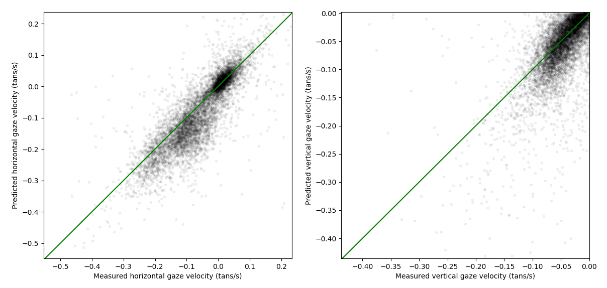
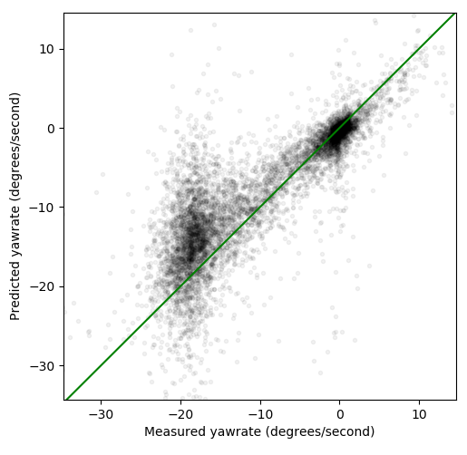

Optic flow of ground plane during curvilinear locomotion
Jami Pekkanen, PAC lab, University of Leeds
TL:DL
- Nice equations connecting optic flow and kinematics (speed and yawrate)
- Human eye seems to follow the optic flow field
- During (simulated) driving at least
- Kinematics can be estimated from eye movements
- Eye movements can be estimated from kinematics
So what is optic flow?
- When you move, the world moves against you
- Visual optic flow is the visual motion pattern caused by the world moving
- The world's movement can be deciphered from the visual motion
Curvilinear locomotion
- Always going forwards
- But changing what forwards is by rotating
- For now, assume that this happens on a plane
Optic flow during planar curvilinear locomotion
- Angular motion of points on the plane
- Now we know that in general
$$\left[\begin{matrix}F_{h}\\F_{v}\end{matrix}\right] = \left[\begin{matrix}h_{o}^{2} \cdot yawrate + yawrate - \frac{h_{o} \cdot speed \cdot v_{o}}{eyeheight}\\\frac{v_{o} \cdot \left(eyeheight \cdot h_{o} \cdot yawrate - speed \cdot v_{o}\right)}{eyeheight}\end{matrix}\right]$$
Gaze follows the optic flow (approximately)
- TODO: Imagine gaze paths overlaid on the flow picture
So what?
- Can estimate speed and yawrate from gaze and eyeheight
- Can estimate gaze from speed, yawrate and eyeheight
- Can estimate gaze position from gaze movement, speed, yawrate and eyeheight
- etc


The pits of madness
- What really is flow
- What really is optic flow
- Is optic flow sensed from retinal flow and how
- How the eye knows how to follow the optic flow